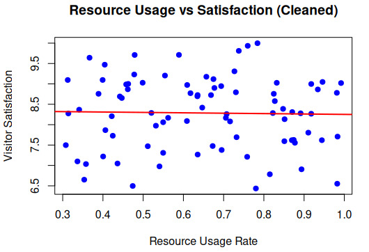
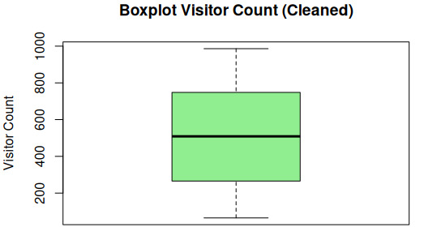
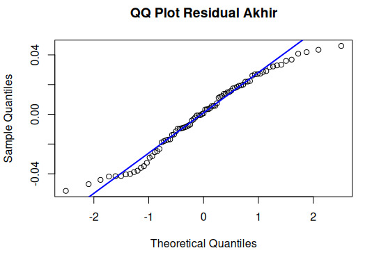
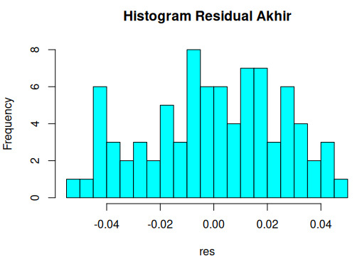

Abstract
The development of Internet of Things (IoT) technology has brought significant changes in data management in the tourism sector. This study aims to analyze the effect of visitor count, resource utilization rate, and environmental factors on tourist satisfaction using multiple linear regression. The final model produced an R-squared value of 0.623.
Keywords: IoT, Tourism, Linear Regression, Tourist Satisfaction, Data Analytics
Tourist Satisfaction Predictor
Start with a scenario, adjust the conditions, then see the predicted satisfaction. This is a simplified Multiple Linear Regression model based on the coefficients from this study. Every change updates the prediction instantly, in your browser.
Start from a real condition. Ideal Day, Overcrowded, or Hot and Noisy. No need to guess from zero.
Change visitor count, resource usage, temperature, air quality, or noise. Watch how satisfaction moves.
Don't just trust the score. See which factor is pulling satisfaction down the most, and what to fix first.
Figure 1 — Resource Usage vs Satisfaction
Negative correlation. Click to zoom.

Figure 2 — Visitor Count Distribution
Outliers affected the initial model. Click to zoom.

Figure 3 — QQ-Plot of Residuals
Normality check. Click to zoom.

Figure 4 — Histogram of Residuals
Symmetric distribution. Click to zoom.

Dataset Structure
| Variable | Type | Description |
|---|---|---|
| visitor_satisfaction | Float — Y | Tourist satisfaction score (0-10) |
| visitor_count | Int — X1 | Number of visitors per hour |
| resource_usage_rate | Float — X2 | Facility utilization rate (0-1) |
| temperature | Float — X3 | Environmental temperature (°C) |
| air_quality_index | Int — X4 | Air Quality Index |
| noise_level | Float — X5 | Noise level (dB) |